1 About
This document is the go-to “how-to” manual for the Gilmore Lab. It is where we document every imaginable procedure and task so that future lab members can get up-to-speed quickly and efficiently.
The document is a group effort. It is revised and updated often.
2 Projects
Active
Play & Learning Across a Year (PLAY)
Survey data from PLAY can be found here:
Databrary
Open and Reproducible Research Initiative
Past
Sex differences in vision and cognition
Optic flow
3 Onboarding
The lab uses a number of tools. This section describes them.
Asana
Asana is used for task management in the lab.

Sign up for an account
- Go to the Log in page
- Pick
Sign Upat the bottom of the window
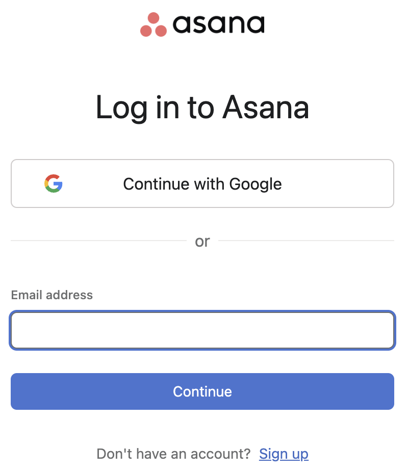
Emailthe lab manager with your name associated email address so they may add you to the Gilmore Lab space
Discord
Please accept the invitation to our server ‘Gilmore Lab’:
You may be asked to create your account first. If so, follow these steps:
- Open your web browser and register for a Discord Account.
- Fill out the information including your email address, username, and password. - Once you fill out the required information, click on
Continue. - You have now successfully created your Discord Account.
- You need to verify your email address before you can fully use your Discord account.
- Go to your email and open the email from Discord.
- Click on
Verify Emailbox to verify your email account.
DataCamp
DataCamp is used for learning the basics in R
The Lab Manager will send an invitation to your PSU email address to join DataCamp.
Please check your PSU email and accept the invitation email to the Psych 494 Research Studies Class
If you do not already have an account on DataCamp, please create one.
- go to DataCamp
- enter your PSU email address and create a password
Google Calendar
Create a Google calendar including anything that you have on a regular basis (e.g. classes/weekly meetings)
Things you need to know:
You will need to make each class in your schedule a recurring event so it propagates for the whole semester.
Share this calendar with the lab email with
See all event details
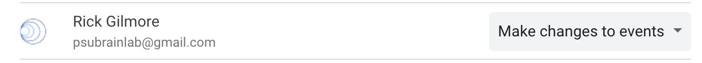
After the lab manager receives all calendars for the semester, the weekly meeting time will be determined. This meeting time will then be sent out via a google calendar invitation.
GitHub
Please accept the invitation email the lab manager sent to your PSU email account to be added to our Git Repository. I believe you will be asked to create a username, enter your email and create a password at this time.
RStudio
On the web
Connect RStudio to Git/GitHub
HappyGit and GitHub for the useR is the BEST instruction manual with ALL of the nitty gritty details! However I am going to provide a short version with some more screenshots here.
The general steps are: - download R - download RStudio - download Git - connect RStudio and Git/GitHub
Mac
Download R

Download R Studio
Download Git
Windows
Download R
Go to https://posit.co/download/rstudio-desktop/
Click the button for DOWNLOAD AND INSTALL R
This should take you to https://cloud.r-project.org/
Click on the link Download R for Windows

Click on the link install R for the first time
Click on the link Download R-4.2.3 for Windows (or whatever is the most recent version of R listed)

Then open the downloaded .exe file to install
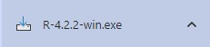
Choose Next to install into the default folder
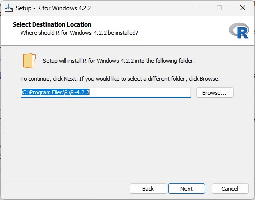
Download R Studio
Go to https://posit.co/download/rstudio-desktop/
Click the button for DOWNLOAD RSTUDIO DESKTOP FOR WINDOWS
(I think this button changes based upon the computer you are on - check on Mac)
Click on the downloaded .exe file to begin installing RStudio
(I don’t have screenshots of this process for windows)
Download Git
There are 15 different screens during the installation process for Windows.
Connect RStudio and GitHub
4 Trainings
IRB training
At Penn State, research is governed by an Institutional Review Board (IRB).
All faculty, staff, and students who conduct research need to undergo training from the IRB. There are different training programs for different types of research, e.g., research with human participants or with non-human animals.
In this lab, all students and staff must complete training in the ethics of conducting research with human participants.
CITI Training
The Collaborative Institutional Training Initiative (CITI Program). provides training modules for researchers.
For Access, go to CITI training.
Expiration: every 3 years.
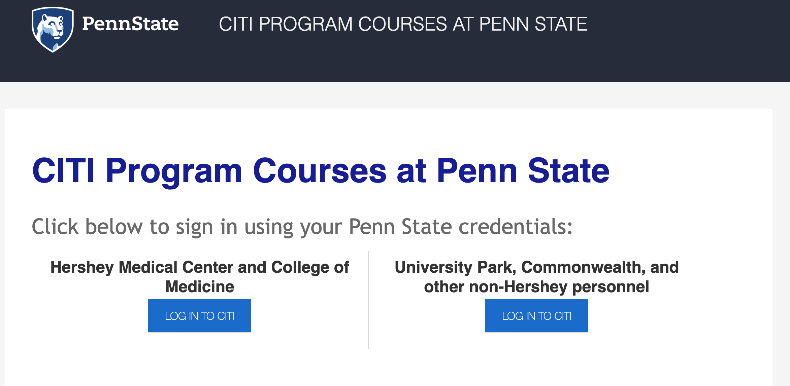
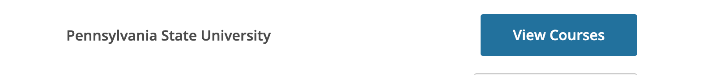
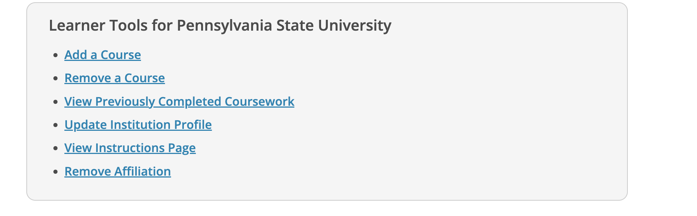

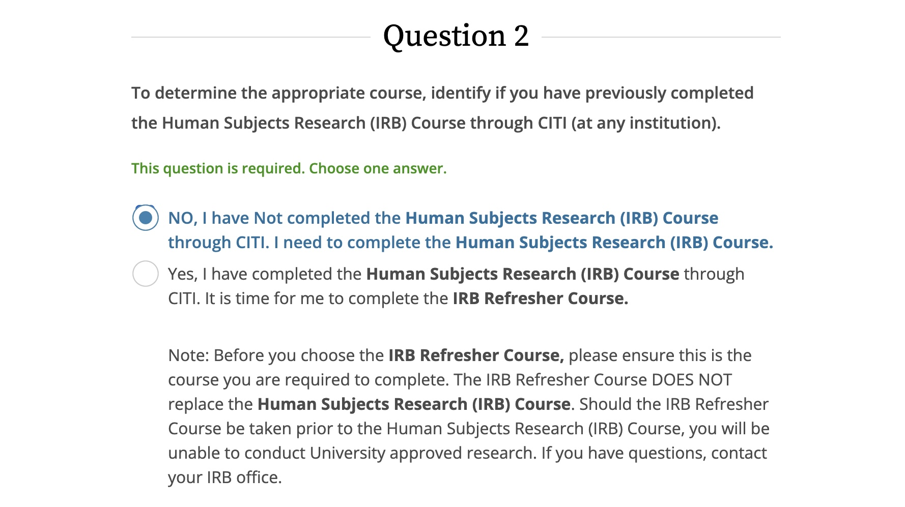
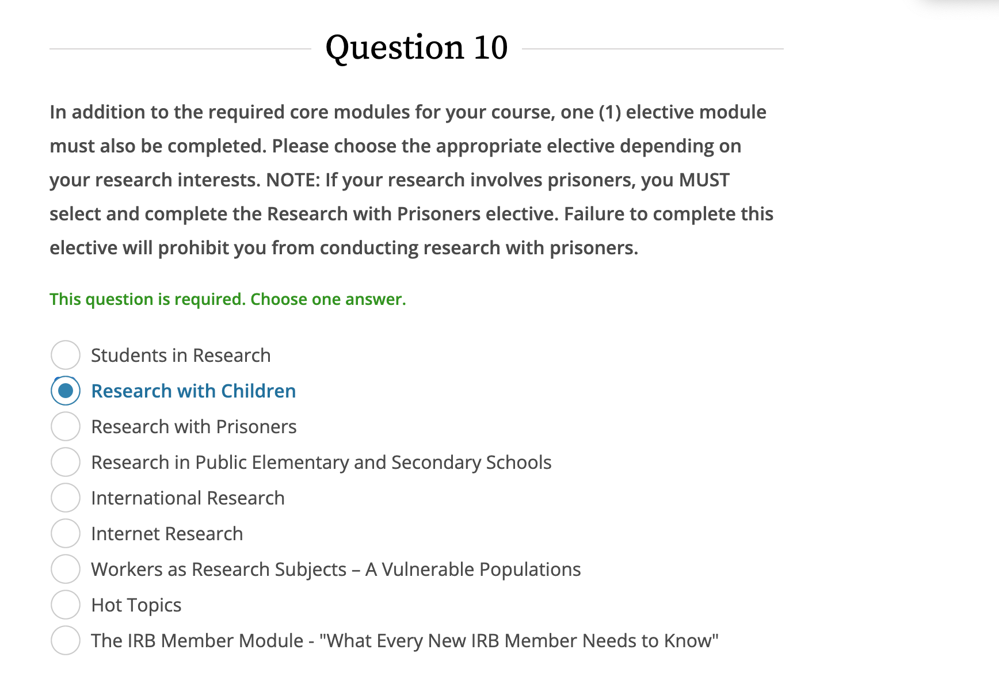

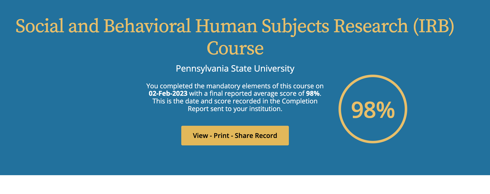
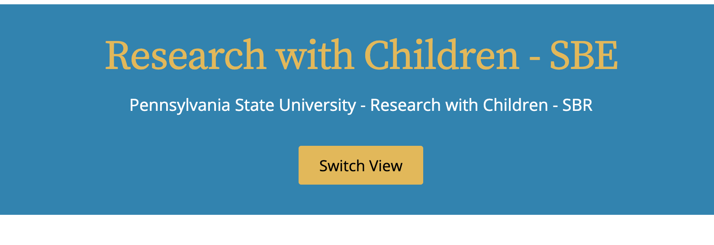
- Choose the
University Park, Commonwealth, and other non-Hershey personneloption
- Click
LOG IN TO CITI
Login = PSU Access ID
Click View Courses next to Pennsylvania State University
If you have never taken an IRB course before
- Under the Learner Tools for Pennsylvania State University click
Add a course
- Choose
Institutional Review Board (IRB) training for human subjects researchthenNext
- Choose
NO, I have Not completed the Human Subjects Research (IRB) Course through CITI. I need to complete the Human Subjects Research (IRB) CoursethenNext
- Choose
Social Science ResearchthenNext
- Choose
Research with ChildrenthenNext
Take the ‘Social and Behavioral Human Subjects Research (IRB) Course’.
Email your training certificate to the lab email once this is complete.
If you have completed this training previously, please email your training certificate.
If you are taking a renewal IRB course
Other PSU-required trainings
Annual Compliance Training
The Penn State compliance training is required for all Penn State employees, graduate students, and students participating in research at Penn State. This training covers ethics and obligation required of a Penn State employee.
To learn more about the compliance training or other trainings at Penn State please visit either of the following links:
https://universityethics.psu.edu/resources-and-training
https://universityethics.psu.edu/resources-and-training/compliance-training-plan
The compliance training has a required renewal of 365 days.
For Access go to the Learning Resource Network
4.0.1 Understanding Title IX at Penn State
Employees and anyone with an active Penn State Access Account (WebAccess) should access the training through the Learning Resource Network:
- Click the box
Faculty, Staff & Part time - Then
Login with Access Account - In the Search box, type Title IX
- Choose
Understanding Title IX at Penn StateYou may need to click theRequestButton to take the class again for this year.
If you have difficulty logging in go to the Learning Resource Network with your PSU account:
Select
Volunteer/Non-Paid Student/OtherClick the box
Volunteer/Student/Other Create LRN AccountSupervisory Organization: Choose
Affiliate PENN STATE STUDENTLocation: Choose
Penn State University ParkPosition Type:
StudentEnter your password
Click the
I'm not a robotboxClick the
Log InboxKeep this login information. You will need it to complete training on the LRN site every calendar year.
Email your training certificate to psubrainlab@gmail.com once this is complete.
Login with PSU Access Account
- Click the box
Faculty, Staff & Part time
- Then
Login with Access Account
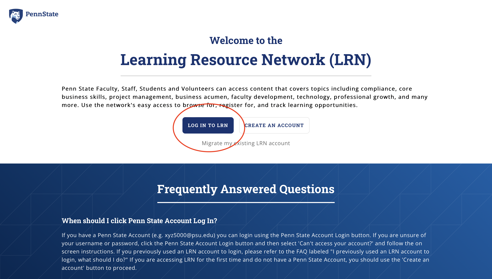
- In the Search box, type
Annual Compliance Training - Choose
2022 Annual Compliance Training
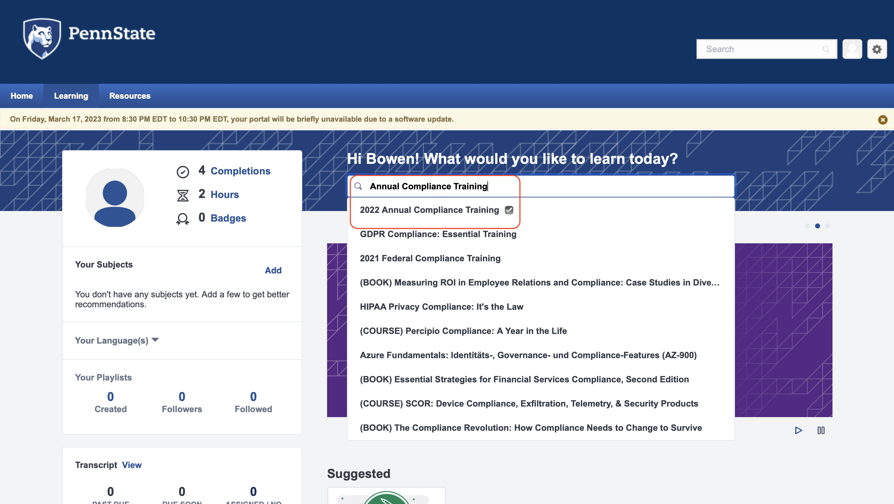
Login with a LRN Account
If you have difficulty logging in go to: http://lrn.psu.edu/
- Select
Volunteer/Non-Paid Student/Other
- Click the box
Volunteer/Student/Other Create LRN Account
- Supervisory Organization: Choose
Affiliate PENN STATE STUDENT
- Location: Choose
Penn State University Park
- Position Type:
Student
- Enter your password
- Click the
I'm not a robotbox
- Click the
Log Inbox
Keep this login information. You will need it to complete these trainings every calendar year.
Email your training certificate to the lab email once this is complete.
4.0.2 Understanding Title IX at Penn State
Employees and anyone with an active Penn State Access Account (WebAccess) should access the training through the Learning Resource Network:
- Click the box
Faculty, Staff & Part time - Then
Login with Access Account - In the Search box, type Title IX
- Choose
Understanding Title IX at Penn StateYou may need to click theRequestButton to take the class again for this year.
If you have difficulty logging in go to the Learning Resource Network with your PSU account:
Select
Volunteer/Non-Paid Student/OtherClick the box
Volunteer/Student/Other Create LRN AccountSupervisory Organization: Choose
Affiliate PENN STATE STUDENTLocation: Choose
Penn State University ParkPosition Type:
StudentEnter your password
Click the
I'm not a robotboxClick the
Log InboxKeep this login information. You will need it to complete training on the LRN site every calendar year.
Email your training certificate to psubrainlab@gmail.com once this is complete.
4.0.3 Building a Safe Penn State: Reporting Child Abuse
4.0.4 Clery Act Training
5 Workflow
Here’s a possibly useful resource:
https://zsmith27.github.io/rmarkdown_crash-course/lesson-5-code-chunks-and-inline-code.html
Package dependencies
There are many R packages that make writing documents like this especially easy. These must be installed in your system.
install.packages("tidyverse")R Markdown conventions
bookdown
- To omit the automatic numbering, add
{-}to the end of the line for each header–e.g., lines that start with one or more hash#characters.
# Top-level header without numbers {-}
## Second-level header without numbers {-}knitr
Inserting images
To insert an image, you will need to insert an R code chunk (opt+command+I on MacOS; alt+ctrl+I on Windows).
```{r, out.width="100%", fig.align="center", fig.cap="This is a great figure from Seisler et al. 2023."}
knitr::insert_graphics("path/to/img_file")
```6 Tricks and tips
Learning resources
R Markdown
One of the authors of the bookdown package that we are using to make this manual wrote a book about R Markdown: https://bookdown.org/yihui/rmarkdown/.
It’s a great resource, and it gets updated regularly unlike the printed book.
Naming things
knitr
knitr is one of the engines that turns RMarkdown into HTML, PDF, and other outputs.
By engine we mean it’s an R package.
The package also let’s us create ‘chunks’ of R code.
Use chunk formatting
This will appear in 'chunk' formatting.Make code chunk with {r} formatting
Here is how to make a code chunk appear with the formatting you need to type it into an R Markdown document.
To see what this looks like in the R Markdown document, you have to view the code.
```{r, out.width="100%", fig.align="center", fig.cap="Fig 1"}
knitr::include_graphics("path/to/img_file")
```Embed a video
```{r, echo=FALSE, out.width="100%", fig.align="center", fig.cap="Data Sharing and Management Snafu in 3 Short Acts: https://youtu.be/66oNv_DJuPc"}
knitr::include_url("https://www.youtube.com/embed/66oNv_DJuPc")
```And here is how that will look in the document.
I’ve added echo=FALSE to the knitr parameters so that the chunk itself doesn’t appear.
(#fig:unnamed-chunk-26)Data Sharing and Management Snafu in 3 Short Acts: https://youtu.be/66oNv_DJuPc
It’s good practice to put the URL to the video in the figure caption. That way if the embedding fails, you have a fallback. Also, it’s good academic practice to site all sources.
Notice that the URL for the embedded video is slightly different from the video’s landing page.
The landing page URL has https://youtu.be/66oNv_DJuPc while the embedded video has https://www.youtube.com/embed/66oNv_DJuPc.
The video’s identifier (66oNv_DJuPc) is the same in both.
7 Lab Computer Maintenance
When completing both procedures, reset PRAM first, then SMC. - completed 4/2023 when wireless mouse was acting up
7.1 Reset PRAM/NVRAM
PRAM stands for “parameter random-access memory.” This is the portion of the system memory that holds a small number of settings that the system can access quickly. Newer Intel Macs use NVRAM (non-volatile random–access memory) for the same purpose. Apple keeps things like the display resolution, volume, and startup disk location in this portion of your system memory. Resetting the PRAM or NVRAM can sometimes remedy strange bugs. Both PRAM and NVRAM are reset the same way.
Complete the following steps:
- Shut Down Mac
- Turn On Mac
- Immediately press
option + P +R - Hold down until AFTER you hear the start-up sound
7.2 Reset SMC
The SMC is the system management controller. Resetting the SMC is a similar operation to resetting the NVRAM. Apple recommends resetting it to fix issues with power, battery, fans, and other features.
Complete the following steps for an iMac, Mac Pro, or Mac mini:
- Shut Down Mac
- Unplug Power Cord and wait 15-20 seconds
- Plug in and wait 5 minutes
- Start Up Mac
M1 Macs
M1 Macs don’t need to have NVRAM cleared or the SMC rebooted. (SMC doesn’t exist on M1 Macs.) When an M1 Mac reboots, it runs a sequence to make sure the NVRAM is doing what it should do. This is the advantage of Apple making both the hardware and the software.